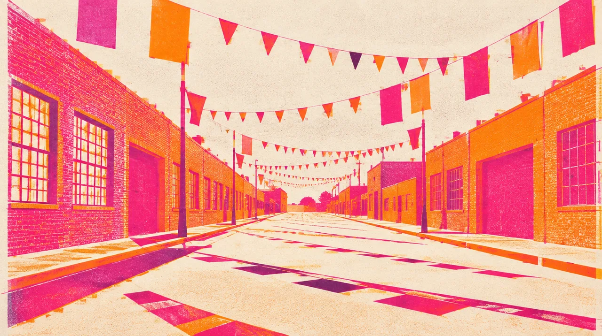

GATHERING · SUN SEP 27 · San Francisco
FOLSOM STREET FAIR
A familiar city. A friend for the ages.
4days out
- When
- Sun Sep 27, 2026
- Where
- Folsom Street · SoMa · 11 AM to 6 PM, San Francisco · Directions
- Light
- A daylight chapter
In the mix
Folsom Sunday with Shannon Murray. One of my dearest friends since San Francisco in the 1990s, in a city that holds so much of our history. The fair runs 11 AM to 6 PM. I also plan to stop by The Foundry, the venue for our March GGP nights.
Notes to the crew
Dig into the sound and story
3 short chapters. Open the ones that call to you.
SUNDAY IN SOMAA whole street comes alive.
Folsom Street Fair is Sunday, September 27, 2026, from 11 AM to 6 PM. The organizer’s fair page is the place for the map, stages and current details.
SHANNONSome friendships hold whole eras.
One of my dearest friends since the 1990s. It means something to share this city with Shannon, then carry that friendship into our Palm Springs Pride and birthday weekend.
THE NEXT ROOMA Sunday stop. A March return.
I also plan to stop by The Foundry during the fair weekend. We will return there for Zero Proof on March 1 and the annual GGP mixer on March 2. A place to feel now, and imagine full of our people later.
Same crew, other nights
Swipe the picture, or use the arrow keys, for the next night.